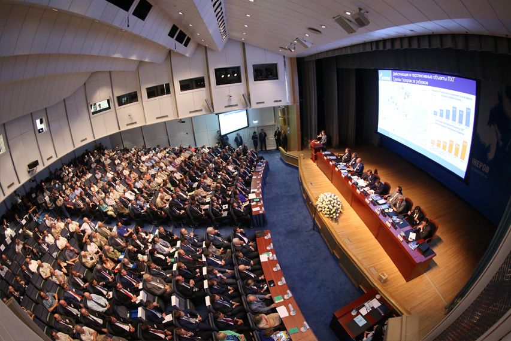
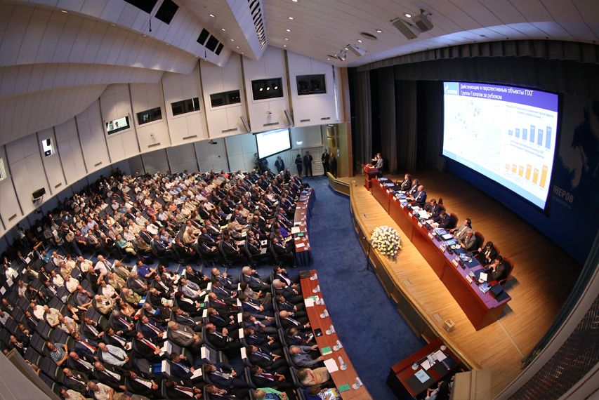

Прошел региональный этап Всероссийского чемпионата по компьютерному многоборью среди пенсионеров
 

Как сообщили РИА «Сахалин-Курилы» в пресс-службе компании «Сахалин Энерджи», в нем участвовали 33 человека, которые прошли курс молодого бойца.
в «Университете старшего поколения». Перед финальными боями им пришлось держать экзамен на заочном межмуниципальном этапе. Кроме южносахалинцев, в многоборье сразились пенсионеры из Холмска, Корсакова, Долинска и Поронайска. Соревнования организовал учебный центр «Активное образование» при финансовой поддержке Фонда социальных инициатив «Энергия» компании «Сахалин Энерджи».
В программу двухдневного чемпионата вошли сами состязания и цикл семинаров по безопасности в сети Интернет, работе с мобильной техникой и программами для видеообщения.
Победителями регионального этапа в категории начинающего пользователя стала Вера Демагина из Долинска. На втором месте – южносахалинец Владимир Востряков и на третьем – Любовь Давыдова из Корсакова. Среди уверенных пользователей вне конкуренции оказался Александр Шостак из областного центра, второе место – у холмчанки Людмилы Панович, третьей была Татьяна Анищенко из Поронайска.
Полезные ссылки:
- Сайт международного сообщества пенсионеров
- Фонд социальных инициатив «Энергия»
- Сайт международного сообщества пенсионеров
- Фонд социальных инициатив «Энергия»